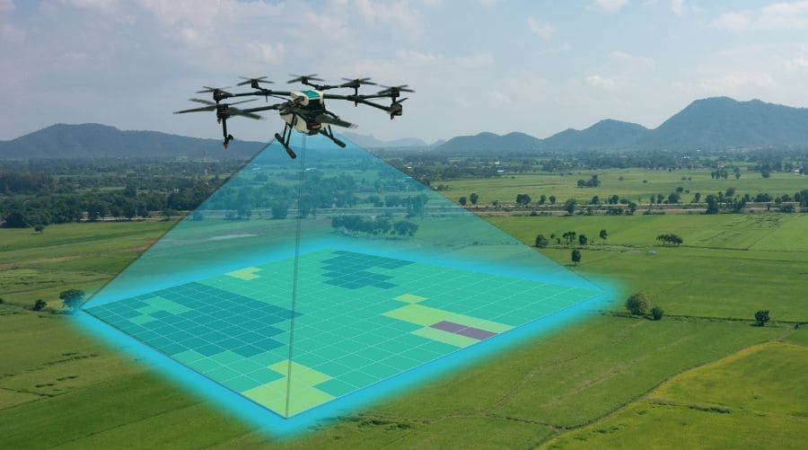

Haz clic en cada tarjeta para desplegar las características técnicas avanzadas.
Precisión Agrícola
Agricultura de Precisión
Zonificación digital y prescripción variable de insumos para maximizar el rendimiento por hectárea con mínimo impacto ambiental.
Diagnóstico: Variabilidad del suelo y vigor del cultivo
Precisión: Centimétrica RTK (± 2 cm)
Optimización: Ahorro estratégico de insumos y recursos
Aspersión Aérea
Aplicación Aérea con Drones
Aspersión foliar ultra eficiente de fitosanitarios y fertilizantes. Cobertura uniforme y 0% compactación del suelo.
Dosificación: Hasta 90% de ahorro en agua
Precisión: Guiado RTK de vuelo milimétrico
Calidad: Microgotas atomizadas de alta adherencia
Salud Vegetal
Análisis Multiespectral
Detección temprana de estrés hídrico, plagas y vigor vegetal mediante sensores multiespectrales de 4 bandas y RGB.
Resolución: Desde 2 cm por píxel
Mapas: Reflectancia multiespectral y zonificación GIS
Precisión: Georreferenciación centimétrica RTK
Topografía RTK
Cartografía y Topografía
Ortomosaicos 2D de alta precisión y Modelos Digitales de Elevación (MDE) para curvas de nivel y cálculo de tierras.
Resolución: Desde 2 cm por píxel
Precisión: RTK centimétrica (± 2 cm con GCPs)
Entregables: CAD, GIS, KML, MDE y GeoTIFF
Ganadería Inteligente
Ganadería de Precisión
Levantamiento de potreros, rotación inteligente de ganado, redes de suministro de agua y fertilización de pastos con drones.
Potreros: Levantamiento digital y aforos de pasturas
Hidrografía: Diseño y monitoreo de redes de agua
Pastos: Fertilización y fumigación aérea de pasturas
Diagnóstico Agrícola
Inspecciones Agrícolas de Cultivos
Monitoreo fitosanitario y diagnóstico visual de alta resolución con sensores térmicos y RGB para identificar fallas de riego y estrés en plantas.
Diagnóstico: Fitosanitario, estrés hídrico y térmico
Detección: Puntos críticos y anomalías de cultivo
Normativa: Informes técnicos conforme a RAC 100
Sobre Nosotros
Soluciones inteligentes con drones para el campo y la industria.
En Flymetrics combinamos tecnología aérea, análisis geoespacial y experiencia operativa para ofrecer servicios de agricultura de precisión, aplicación aérea, monitoreo multiespectral, cartografía e inspecciones técnicas que mejoran la productividad y la toma de decisiones.
Misión
Brindar soluciones especializadas mediante drones y análisis de información geoespacial que permitan optimizar la toma de decisiones, mejorar la productividad y aumentar la eficiencia operativa de nuestros clientes en los sectores agrícola, ambiental e industrial.
Visión
Ser una empresa referente en Colombia en servicios con drones, reconocida por la innovación tecnológica, la calidad de los resultados y el aporte a la transformación digital de los procesos productivos.
Sostenibilidad
En Flymetrics promovemos el uso eficiente de los recursos mediante tecnologías de agricultura de precisión y captura de información geoespacial, contribuyendo a una mejor gestión del agua, los insumos agrícolas y la planificación de actividades productivas.
Simula la operación aeroagrícola en topografías reales de Colombia y compara la velocidad, ahorro de agua y personal frente a métodos tradicionales de espalda.
Eficiencia en Dosificación Foliar:+35% Mayor Absorción
Zonas de Mayor Presencia
Despliegue operativo continuo en las principales regiones productivas agrícolas y ganaderas de Colombia.
Cobertura Estratégica
Zonas de Mayor Presencia
Selecciona un departamento para ubicar en el mapa interactivo las bases y áreas de vuelo activo:
CundinamarcaBase Central
Sabana de Bogotá, Facatativá, Chía, Madrid — Flores, Papa y Hortalizas
Meta (Llanos Orientales)Operación Continua
Villavicencio, Puerto López, Granada — Palma, Soya, Maíz y Ganadería
HuilaLaderas y Valles
Neiva, Campoalegre, Pitalito — Café de Especialidad, Arroz y Frutales
TolimaPlanicies de Riego
Espinal, Ibagué, Saldaña — Arroz, Maíz, Algodón y Pasturas
MAPA DE COBERTURA OPERATIVA FLYMETRICS
CundinamarcaServicio: Monitoreo Multiespectral, Cartografía y AspersiónCobertura: Base Central y Operaciones Sabana
Preguntas Frecuentes
Resolvemos tus principales dudas sobre la operación aérea en predios agrícolas colombianos.
No la reemplazan, la tecnifican. Nuestros técnicos operan de la mano de los agrónomos locales. El uso de sistemaes reduce la exposición humana directa a agroquímicos nocivos en un 100% y permite cubrir terrenos difíciles o encharcados donde la maquinaria tradicional no puede ingresar.
Los reportes preliminares se generan directamente en campo tras el aterrizaje de la aeronave de diagnóstico. Los mapas ortomosaicos ortorrectificados finales de salud y vigor del cultivo se cargan procesados en tu portal en menos de 24 horas hábiles.
Sí, absolutamente. Toda nuestra flota cuenta con pólizas de responsabilidad civil extracontractual y está registrada ante la Aeronáutica Civil (Aerocivil) de Colombia. Nuestros pilotos son operadores certificados bajo la norma aeronáutica RAC 100 y cuentan con licencias y bitácoras vigentes.
Escribe tus datos y te contactamos en 24 horas
Un asesor especializado de Flymetrics responderá tu consulta sin ningún compromiso.
¡Mensaje Recibido!
Un asesor de Flymetrics revisará tu solicitud y te contactará muy pronto a través del correo o WhatsApp que nos dejaste.
+57 305 406 1764
comercial@flymetrix.com.co
Atención 24 Horas

Agricultura de Precisión
Tecnología Empleada
Sistema de Aspersión de Precisión
Rendimiento
Hasta 22 Hectáreas / hora
Alcance y Diagnóstico
Diagnóstico Multiespectral y Telemetría RTK
Precisión RTK
Centimétrica RTK (± 2 cm)
Aplicación de precisión de insumos agrícolas (fertilizantes, fungicidas y herbicidas) mediante aspersión aérea inteligente con drones Sistema de Aspersión de Precisión. Reducimos el uso de agua hasta en un 90% y garantizamos una cobertura foliar uniforme gracias a las boquillas atomizadoras centrífugas dobles, eliminando la compactación física del suelo en un 100% y protegiendo la salud humana.